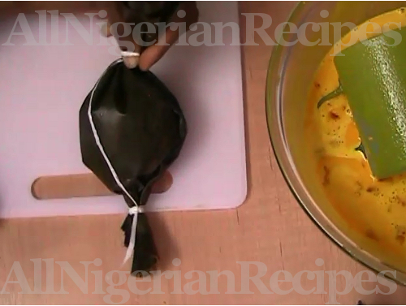

What is Okpa
Okpa is a delicacy that is popular in Eastern Nigeria. It’s made with Bambara nuts or bambara beans. Okpa is one of the healthy Nigerian snacks you should try. To start with, Okpa is best known as “Okpa” in Igbo, “Epa-Roro” in Yoruba, and “Kwaruru” or “Gurjiya” in (Hausa). Okpa is good for the body and is important for the normal functioning of the body as well.
Ingredients
- 3 cigar cups | 450g | 1lb Okpa flour
- 15 tablespoons red palm oil
- 4 small stock/bouillon cubes (Maggi, Knorr etc)
- Salt (to taste)
- Habanero pepper (to taste)
- 1.2 litres lukewarm/tepid water
Before you cook Okpa
- Prepare the banana leaves by washing them in plenty of salt water. If you have a banana/plantain tree in your backyard, you need to wilt the leaves by passing them over a low flame, then leave them to dry up before using them. You cannot wrap Okpa with fresh banana leaves.
- Crush the stock/bouillon cubes.
- Slice the habanero pepper into small pieces.
- Prepare 1.2 litres of lukewarm water.
Cooking Directions
- Sift the Okpa flour into a big enough bowl. Add salt and the crushed stock cubes. Mix very well.
- Add the palm oil. Mix the palm oil and flour very well till the palm oil is well incorporated into the flour. You will have a nice even yellow colour when done.
- Pour a generous quantity of water in a big pot and set on the stove to boil.
- Start adding the lukewarm water to the Okpa flour and mix till there are no lumps.
- Add the sliced habanero pepper. Check for salt and add more if necessary and it's ready to be scooped into the wrappers!
- Now the water in the pot should be boiling. If not, wait for it to boil and add some spare wrappers or plastic bags before moving on to the next step. These wrappers and plastic bags act as a base for the Okpa wraps.
- Now to a major step: wrapping the Okpa! Check for the neccessary steps with elaborate images below.
- After tying one end of the banana leaves as shown below, stir the okpa mix very well and scoop into the leaf. Tie the other end with a string and place the wrapped okpa in the pot of boiling water. It is important that the Okpa is completely immersed in the hot water.
- Repeat the above step for the rest of the mix. Make sure you stir the mix, scoop into the wrapper, tie with the string and put in the pot of boiling water before wrapping another one.
- When done, cover the wraps with more leaves or plastic bags. Cover the pot and start cooking medium to high heat.
- Cook for at least 1 hour before checking it. The Okpa is done when it is solid all over.
Wrapping Okpa
- Place 2 sheets of banana leaves on a flat surface.
- Fold one end to meet the other (vertically).
- Roll up the open end like a mat till you have enough fold to prevent a leakage.
- Gather one end together and tie it up securely with the string.
- Stir and pour the mix into the bag.
- Tie up the other end and it is ready to go into the pot of boiling water.

Return to top
Return to main page